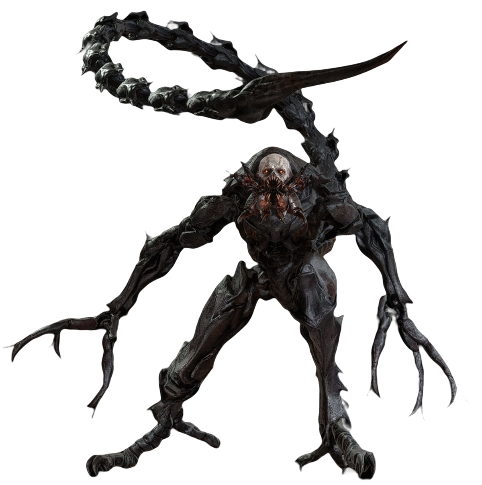

UMBRELLA CORPORATION - CLASSIFIED RESEARCH FILE
FILE ID: BOW-005 | CLEARANCE LEVEL: 6

SUBJECT: T-373 | STATUS: ACTIVE
Bio-Organic Weapon (BOW) — Type C
HIGH
Product of advanced Las Plagas parasitic infection in a human host. The parasite has fully consumed and restructured the host's biology, resulting in a chitinous exoskeleton and elongated, insectoid limbs. Capable of traversing walls and ceilings with terrifying speed and precision. Primary attack is delivered via a razor-sharp, whip-like tail. Demonstrates high aggression and near-impervious defense under standard conditions.
Exoskeleton provides extreme resistance to conventional firearms. Exposure to liquid nitrogen causes the carapace to freeze and shatter, rendering the subject temporarily vulnerable to concentrated gunfire. Rocket-propelled explosives have also proven effective at bypassing natural armor.
The Verdugo represents one of Saddler's most refined biological achievements — a near-perfect fusion of human host and Las Plagas organism. Two specimens, designated T-373 and T-374, served as personal bodyguards to Osmund Saddler himself, suggesting an exceptional degree of Plaga control. Deployment in confined facility environments is strongly recommended. Standard firearms are largely ineffective; research teams operating in proximity must be equipped with cryogenic countermeasures at minimum.